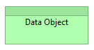
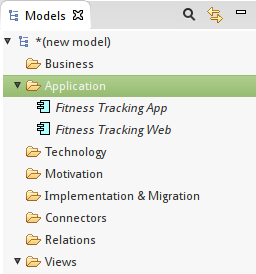
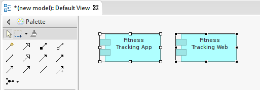
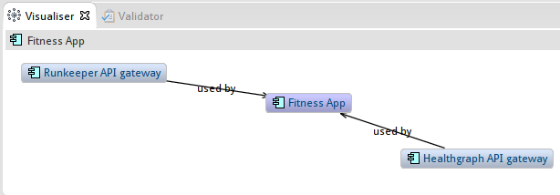
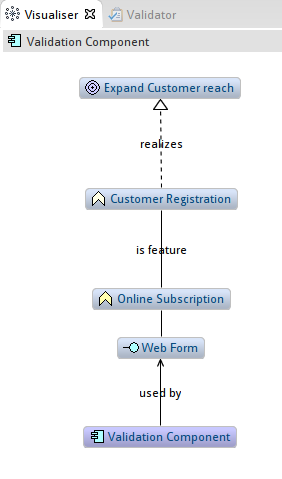
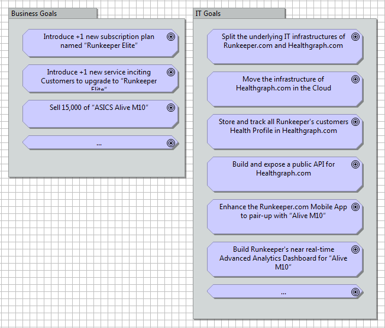

-
Objectives
The purpose of Labs 8-11, is to create new Advanced Analytics Dashboard for RunKeeper.com [http://runkeeper.com/].
We will model Runkeeper's architecture solution for this dashboard using Healthgraph.com API services [http://www.healthgraph.com/].
All models we will build in this Lab aim to identify the SCOPE of our assignment.
At the end of this Lab you will have an architecture library to base your solution designs upon.
-
LAB SETUP (Section A)
In SECTION A of this Lab, we will tailor our modeling environment to suit our needs and learn how to setup and trace architecture model elements.
STEP A1 - SETTING UP MODELING CONVENTIONS
Archimate makes heavy use of color-schemes to help understanding models easily. The original specification however was color independent. Over the years, two types of color conventions have emerged:
Color-scheme A: a primary - “Layer classification” - color scheme, and...
Color-scheme B: a secondary - “Actor classification” - color scheme.
The Archimate Specification 2.1 is based on color-scheme [A], meaning:
- Yellow for model elements belonging to the Business Architecture Layer
- Blue for model elements belonging to the Application Architecture Layer
- Green for model elements belonging to the Infrastructure Layer
Archi's default configuration [http://www.archimatetool.com] is based on convention [A].
Below is an example of the "layer based" color-scheme in Archi:
While color-scheme [A] is a perfectly valid color-scheme, experienced architects prefer using color- scheme [B], meaning:
- Blue for ACTIVE model elements,
- Yellow for BEHAVIORAL model elements, and
- Green for PASSIVE model elements.
We have introduced this color-scheme in our previous Lab (Lab 1). Go back to Lab 1 to remember what 'active', 'behavioral' and 'passive' mean.
The first thing we will do to setup this second Lab is to configure our Modeling Environment to reflect the conventions defined in Lab 1.
EXERCISE 1
Download the new stencils from Moodle onto your computer drive from this link
Start Archi if not done already
Go in "Edit" > "Preferences", then select "Colors and Fonts" from the preferences list on the left:

Click on "Import Scheme" (to the right of the dialog box)
Select the .prefs file you have downloaded from Moodle
Make sure you tick the check-box named: "Save the default colors for elements in the model file"
Make sure you also tick the check box named "Use these fill colors in the model tree and editor palette"
Click OK
Close and Restart Archi
Let's verify that our new color-scheme has been uploaded:
Start Archi once gain, unless done already
Go in "Edit" > "Preferences", then select "Colors and Fonts"
Expand the "Application element fill colors"
We can see our new color-scheme has been applied.

You will notice changes in the Palette. The model elements in the Palette have changed from the old color-scheme [A], to the new color-scheme [B].

Let's verify our new stencils work correctly:
- Look for a "Data Object" model element from the palette. The Archimate 2.1 specification describes the Data Object element as follows:

- Since this is a PASSIVE model element, we should see it displayed in green in our newly updated palette:

- Select the "Data Object" element, and drag it on a new model canvas. You should see the model element successfully dropped on the canvas... this time, in green.

EXERCISE 2
Color-scheme [B] uses color tones to distinguish ELEMENT TYPES (as opposed to the default color-scheme, distinguishing LAYER TYPES). Color-scheme [B] also represents what Layer modeling elements belong to, using color shades.
Create a new blank model in Archi
Clone the figure below
- Can you read from this model the stories of Who, Acts on, What, How and When?
Discussion on Modelling Conventions
In the figure above, Business layer modeling elements (top) are represented by light shades blue/yellow/green colors, while elements of the Infrastructure layer are represented by deeper colors (bottom).
The more complicated the model, the more important it is to use an unambiguous modeling convention... in this case choosing a good color scheme much more than a matter of aesthetics. It helps reading / instant understanding.
In Enterprise environments, many modeling conventions (other than color schemes alone) are agreed upon. Some conventions constrain the use of some modeling elements; others specify a naming rules for model elements, and/or modeling views.
For the purposes of this Lab, we will not introduce any more modeling conventions.
STEP A2 – TREE MODEL INVENTORY
Architects like to build libraries of re-usable model elements. Overtime, this strategy pays off because it becomes possible to RE-USE elements previously created, and benefit from existing documented attributes, properties defined for each (as opposed to re-creating the same model elements from scratch over and over).
From a new blank model, create a 2 application components part of Runkeeper.com's IT landscape.
EXERCISE 3
Click-right on the “Application“ folder in the Model Tree, then “New” > “Application Component”.
Create 2 new model elements of type “Application Component”. Name each respective element as follows:
“Fitness Tracking App”
“Fitness Tracking Web”

You will notice that the two new model elements are displayed in italic. Why? Because none are included into a graphical Model Canvas yet. Let's create a new blank canvas view, and drag each element onto it.

Now let's look back at our Model Tree. We can see that each model element isn't in italic any longer.

EXERCISE 4
In the Model Tree panel, let's change the name of each model element:
From “Fitness Tracking App” to → “Fitness App”
From “Fitness Tracking Web” to → “Fitness Web”

...notice how the model elements on your Model Canvas are immediately updated to reflect the changes you have performed in the Model Tree.
DISCUSSION PN MODEL TREE
A Model Tree stores the library re-usable Architecture model elements. It allows you to create model elements once and use them across many diagrams. You can update the attributes of the element once in the Model Tree, and changes will get reflected in all diagrams at once.
Furthermore, the Visualize panel provides insight on the relationships between model elements.

Using the Visualizer, an architect can browse all Elements from an architecture library using a graph browser, scanning through (n) levels of depth.

A Model Graph Visualizer is much more than a fancy widget. It is a very important way for architects to control the TRACEABILITY of their architecture. For example, starting from a Validation Component underpinning a Web Form, we can trace up to the Feature is implements, the Capability it realizes, all the way up to the Goal it helps to achieve.
In conclusion, we have seen that an architecture library of model elements can be setup independently from creating any Model Canvas. Knowing this, during the course of the next few Labs, we will incrementally add new elements into our architecture library, then find & re-use (drag-and-drop) these elements to model the Views of Runkeeper's Advanced Analytics Dashboard solution architecture.
-
SCOPE IDENTIFICATION: MODEL PRIMITIVES (SECTION B)
In SECTION B of this Lab, we are introducing Runkeeper’s business context. The high-level contextual analysis we are about to embark on will provide you with the knowledge you need to model a solution architecture for a new Advanced Analytics Dashboard, …and enough room to base your own subject assignment on Runkeeper.com (if you wish to do so).
STEP B1 - VISION & DRIVERS
In January 2016, “Runkeeper.com” (http://runkeeper.com) is a subsidiary company of Fitnesskeeper Inc.
“Healthgraph” (https://runkeeper.com/developer/healthgraph/), is an internal division of Runkeeper.com.
In February 2016, Fitnesskeeeper has entered into a definitive agreement to be purchased by ASICS Corporation. Headquartered in Japan, ASICS is best-known for making running shoes and clothing, but also has its own training app for runners. The combined companies will work on physical products with digital fitness tracking features.
Runkeeper.com will continue to exist as a standalone offer, from the Customer standpoint, not much will change. However, starting in 2016 and over the next 2 to 3 years, the management board plans to split Healthgraph from Runkeeper.com, to create a new subsidiary company named Healthgraph.com. Doing so will make of Healthgraph.com a new business line of ASICS Corporation, independent from Runkeeper.com.
IT projects are tools to execute on a strategy. So first, let's capture the main constituents of the Management Board’s vision. To do so, we'll use an analytical framework as described in Lecture Group #1, Part 5.

EXERCISE 5
In the Model Tree, under the View folder, create a new sub-folder named: “R1C5 – Strategy increments”
Within the folder newly added above, create a new Model canvas named “Vision”

In your Model Tree add the model elements you see in the figure below
Then drag the elements you have created on a new canvas and clone the figure below

MORE VISION & DRIVERS
In 2016, Runkeeper.com's focus will be to reach out to a wider audience via an increasing range of health and activity tracking devices manufactured by ASICS. Runkeeper.com will aim to invest in new ways of capturing health data points using the explosion of fitness-tracking technologies (e.g. via wearable devices coupled to phones, via improved phone motion co-processors, etc.).
Healthgraph.com will aim to invest in ways to enrich its database of personal health profiles beyond the list of Runkeeper’s customers only. The objective is to have more data points available to better match and correlate activities, body measurements, and nutrition data.
Being independent from Runkeeper.com, it is expected that Healthgraph.com will create partnerships with competitors of Runkeeper. Competitors to Runkeeper are: GymPact (http://www.gym-pact.com/), Caledos Runner (http://api.caledos.com/), TomTom MySports (http://mysports.tomtom.com/).
Ultimately, it is expected that ASICS Corporation will benefit from the synergies between Healthgraph.com and Runkeeper.com (for example, gain in accuracy of training, coaching, diet recommendations via advance data analytics & reporting).
EXERCISE 6
In the Model Tree, under the View folder, create a new sub-folder named: “R1C6 - Mandate / Intent & directives”
Within the folder newly added above, add the model elements you see from the “DRIVERS” bullet list in the paragraph below DRIVERS:
- Increase Customers reach
- Split into 2 lines of business (LoB)
- Build and Monetize health profiles
- Find synergies between LoB
- Diversify business model
- Avoid conflict of interests (between Runkeeper and Healthgraph)
Within the folder newly added above, create a new Model canvas named “List of Drivers”
Then drag the elements you have created on a new canvas and clone the figure below

STEP B2 – ENVIRONMENTAL CONSTRAINTS
You have been contracted by the CIO of Fitnesskeeper Inc as the main Solution Architect for proposing how to split Healthgraph from Runkeeper.com over the next 2 years. As part of your overarching assignment, your job is to design a new dashboarding capability for Runkeeper.com. This new capability - referred as “Advanced Analytics Dashboard”- will heavily rely on Healthgraph. This dashboard will be the first foray into successfully leveraging the API services of Healthgraph.com.
EXERCISE 7
In the Model Tree, under the View folder, create a new sub-folder named: “R1C4 - Influencers / Environment constraints”
Withing the folder newly added above, create a new Model canvas named “List of Stakeholders”
In your Model Tree add the model elements you see in the figure below
Then drag the elements you have created on a new canvas and clone the figure below
EXERCISE 8
In the Model Tree, under the R1C4 folder, create a new Model canvas named “List of key Constraints”
In your Model Tree add the model elements you see from the “CONSTRAINTS” bullet list in the below paragraph: CONSTRAINTS:
The “Advanced Analytics Dashboard” only displays data pertaining to activity & health metrics captured by the “ASICS Alive M10” device.
Activity & health profile metrics are received from the “ASICS Alive M10” device ONLY via Runkeeper.com App.
Activity & health profile metrics cannot be tempered with.
Activity & health profile metrics are strictly private and cannot be disclosed without consent.
Optional: Drag the elements you have created on the newly created canvas
STEP B3 – OBJECTIVES
In this step we will introduce a number of fictive goals to illustrate motivation modeling.
BUSINESS Goals:
- Dissociate Healthgraph from Runkeeper.com
- Introduce +1 new subscription plan named “Runkeeper ELITE”.
- Convert 20% of Runkeeper's invoiced customer base to the next-level subscription plan.
- Increase Runkeeper's number of registered, paying Customers by 50%.
- Sell 15,000, units of “ASICS Alive M10”.
- Introduce +1 new service offer bound with this new device, inciting Customers to upgrade to “Runkeeper ELITE”.
- Create the first +2 partnerships of Healthgraph.com with direct competitors of Runkeeper.com.
- Increase the size of Healthgraph.com's database/network by 10%.
IT Goals:
- Split the underlying IT infrastructures of Runkeeper.com and Healthgraph.com.
- Move the infrastructure of Healthgraph.com in the Cloud.
- Build and expose a public API for Healthgraph.com, delivering data services for storing/retrieving customer profile data.
- Store and track all Runkeeper's customers Health Profile in Healthgraph.com.
- Enhance the Runkeeper.com Mobile App to pair-up with the new “Alive M10” wearable commercialized on Runkeeper Store.
- Build an Advanced Analytics Dashboard visualizing the metrics captured by the “Alive M10” wearable device in near real-time.
EXERCISE: → In the Model Tree, under the R1C6 folder, create a new Model canvas named “List of Goals” → In your Model Tree add the model elements you see in the figure below → Then drag the elements you have created on a new canvas and clone the figure below

EXERCISE 9
In the Model Tree, under the R1C6 folder, create a new Model canvas named “List of Principles”
In your Model Tree add the model elements you see from the “PRINCIPLES” bullet list in the paragraph below
PRINCIPLES:
- Principle 1: Customers pay for results”.
- Principle 2: Confidentiality about Health profiles is paramount.
Optional: Drag the elements you have created on the newly created canvas
-
INVENTORY SETS: MODEL PRIMITIVES (SECTION C)
In SECTION C of this Lab, we'll build a few Inventory Sets that we can leverage later when creating Solution Architecture Views for the Advanced Analytics Dashboard. We will intentionally limit ourselves to the creation of 3 primitive models:
- Runkeeper capabilities/functions (R1C1)
- Runkeeper data classes + front-end and back-end components (R3C1)
- Runkeeper infrastructure (R6C1)

STEP C1– CAPABILITY MAP
EXERCISE 10
In the Model Tree, under the View folder, create a new sub-folder named: “R1C1 – Business capabilities / functions”
Within the folder newly added above, create a new Model canvas named “Runkeeper Capability Map”
In your Model Tree add the model elements you see in the figure below
Then drag the elements you have created on a new canvas

Set the Viewpoint type for this newly created Canvas to “Business Function” in the Properties panel
Clone the figure below
STEP C2– DATA MAP / SYSTEM MAP
EXERCISE 11
In the Model Tree, under the View folder, create a new sub-folder named: “R3C1 – System / Data Assets”
Within the folder newly added above, create a new Model canvas named “Runkeeper Data Map”
Set the Viewpoint type for this newly created Canvas to “Information Structure” in the Properties panel

- Clone the figure below

Within the same folder create a new Model canvas named “Runkeeper + Healthgraph System Map”
Set the Viewpoint type for this newly created Canvas to “Application Structure” in the Properties panel

- Clone the figure below

STEP C3– INFRASTRUCTUREMAP
EXERCISE 12
In the Model Tree, under the View folder, create a new sub-folder named: “R6C1 – Infrastructure”
Within the folder newly added above, create a new Model canvas named “Runkeeper + Healthgraph Infrastructure Map”
Set the Viewpoint type for this newly created Canvas to “Infrastructure Usage” in the Properties panel

- Clone the figure below